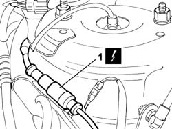
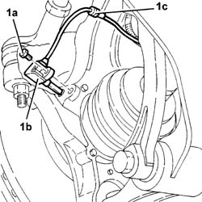

3340A30 rpm sensor (one) for one l/h or r/h front wheel - r+r
- Path
- Procedures > 33 BRAKES > 3340 ANTI-LOCK BRAKING SYSTEM (A.B.S.) > 3340A ABS check/adjustment devices > 3340A30 rpm sensor (one) for one l/h or r/h front wheel - r+r
- Kind
- repair procedure (removal / refitting; the operation number is the code)
- Applies to
- all engines; all production periods
- Interactive page
- https://sloeber94.github.io/elrnDB-lThss/en/#/78644
Applies to: all engines; all production periods
 Removing
Removing
 Refitting
Refitting- Position the vehicle on a lift.
- Disconnect the negative battery terminal.
1. Disconnect the electrical connection for the rpm sensor on the suspension turret.
 | Description | Connector |
|---|---|---|
1 | Left front wheel sensor for ABS | K070 |

Applies to: all engines; all production periods
See in Op. 4450B02 Left FRONT WHEEL (one) - R.R.
-
See in Op. 7055B64 Engine compartment DUST SEAL in front wheel arch (one), left or right - R.R.
1. Undo the fixing bolt (1a) and remove the ABS left front rpm sensor (1b), complete with wiring (1c), releasing it from the retaining bands.

Applies to: all engines; all production periods
Refitting
Removing- Fit the ABS left front rpm sensor and tighten the fixing bolt.
See in Op. 7055B64 Engine compartment DUST SEAL in front wheel arch (one), left or right - R.R.
See in Op. 4450B02 Left FRONT WHEEL (one) - R.R.
-
Connect the electrical connection for the rpm sensor on the suspension turret.
| Description | Connector |
|---|---|---|
. | Left front wheel sensor for ABS | K070 |
- Connect the negative battery terminal.
- Remove the vehicle from the lift.
Topics linked from this page (2)
- 4450B02 Left FRONT WHEEL (one) - R.R.
- 7055B64 Engine compartment DUST SEAL in front wheel arch (one), left or right - R.R.